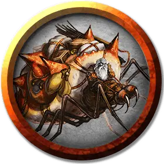

Самец стидера
Male Steeder
Средний Монстр, без мировоззрения

Класс Доспеха 12 (природный доспех)
Хиты 13 (2к8 + 4)
Скорость 30 футов, лазая 30 футов
| мод | спас | ||
|---|---|---|---|
| СИЛ | 15 | +2 | +2 |
| ЛОВ | 12 | +1 | +1 |
| ТЕЛ | 14 | +2 | +2 |
| мод | спас | ||
|---|---|---|---|
| ИНТ | 2 | −4 | −4 |
| МДР | 10 | +0 | +0 |
| ХАР | 3 | −4 | −4 |
Навыки Скрытность +5
Чувства тёмное зрение 120 футов, пассивное Восприятие 10
Опасность 1/4 (50 опыта)
Бонус мастерства +2
Среда обитания Подземье
Особенности
Существо с точно таким же названием присутствует и в другой книге D&D 5-й редакции, и блок статистики этого существа отличен. Если вы искали это существо намеренно, вы могли по ошибке найти не то, что вам было нужно. Ссылка на аналог:
Самец стидера (MToF)
— Господин Финик.
Паучье лазание. Стидер может передвигаться по наклонным и труднопроходимым поверхностям, а также спускаться с потолка, без нужды совершать проверку характеристики.
Скачок. Стидер может потратить все свое передвижение в своем ходу на прыжок до 60 футов в вертикальном или горизонтальном направлении, но только если в данный момент его скорость составляет по крайней мере 30 футов.
Действия
Укус. Рукопашная атака оружием: +4 к попаданию, досягаемость 5 футов, одна цель. Попадание: 7 (1к8 + 2) колющего урона цель должна совершить спасбросок Телосложения Сл 12, получая урон кислотой 4 (1к8) при провале или половину этого урона при успехе..
Липкие лапы (перезаряжается, когда стидер не удерживает ни одного существа). Рукопашная атака оружием: +4 к попаданию, досягаемость 5 футов, одна цель – существо Маленького или Крохотного размера. Попадание: Цель прилипает к лапе стидера и становится схваченной до тех пор, пока не освободится (Сл высвобождения 12). Стидер может удерживать только одно существо за раз.
Описание
Гигантские охотничьи пауки, стидеры рыщут по Подземью. Со многими стидерами можно столкнуться вместе с группой дуэргаров.
Превосходство самок. Самки стидеров растут больше и сильнее самцов, и часто пожирают своих самцов после спаривания. В неволе, самцов используют в качестве рабочего скота, тогда как самки служат скакунами в бою.
Хищники-одиночки.Стидеры считают других своих сородичей своими врагами и пытаются разорвать в клочья свою предполагаемую угрозу. Их дуэргарские наездники стараются избегать прочих наездников и надевают им наглазники во время езды, чтобы стидеры не напали друг на друга.
Хитрые бестии.Стидеры достаточно разумны для изучения простых жестов руками и звуковых команд, но даже одомашненный стидер может обратиться против своего всадника. Дрессировка этих бестий требует особой связи наездника со стидером, такой процесс происходит сразу после того, как вылупится стидер из яйца. Наездник остаётся со стидером, пока тот не вырастет до своего полного размера, разбираясь в течении этого времени с инстинктами хищника у стидера.
Смертоносные охотники. Вместо того, чтобы плести сеть паутин, стидеры выделяют из своих ног вязкую субстанцию. Эта слизь позволяет им ползти по стенам и потолкам, чтобы схватывать свою жертву.